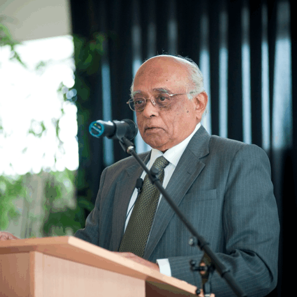
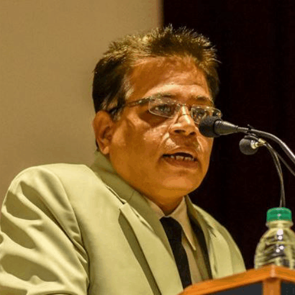

About:
The Speaker Sessions are amongst the premier events of Abhiyantriki. Witnessing great stalwarts from varied domains every year, this event serves an inspiration to the young generation and provides a platform for the audience to get inspired from the stories of eminent personalities and imbibe their ideas to walk on their own path of glory.
Dr. R. Chidambaram
Dr. R. Chidambaram is one of the most renowned scientists of India and has received his Ph.D.degree from the famous Indian Institute of Science, Bangalore. He was instrumental in the nuclear explosion programme at Pokhran in 1974. Dr Chidambaram has served as the Director of Bhabha Atomic Research Centre (BARC) and was also the Chairman of Atomic Energy Commission of India. He has been conferred with many accolades, most notable being the prestigious awards of Padma Shri and Padma Vibhushan, India's fourth and second highest civilian awards, respectively. He has published more than 200 research papers and has made a plethora of noteworthy contributions in the field of science.

Dr. Abhas K. Mitra
Dr Abhas Kumar Mitra is the former Head of Theoretical Physics section at Bhabha Atomic Research Centre (BARC), Mumbai. He is currently an (Hon) Adjunct Professor at Homi Bhabha National Institute, Mumbai. He is a distinguished alumni of Mumbai University and his idea about black holes was subject to a press release from the prestigious Harvard University. Dr Mitra has a 90 year old cosmological puzzle named after him which is known as the “Mitra Paradox”. He has been invited as guest speaker at prestigious institutes such as IIT Bombay, IIT Kharagpur, VJTI, and other institutes, and has delivered 4 TEDx talks on Theoretical Physics till date. Dr Abhas Kumar Mitra has been bestowed with various awards for his ground-breaking researches in theoretical physics, especially on black holes.
